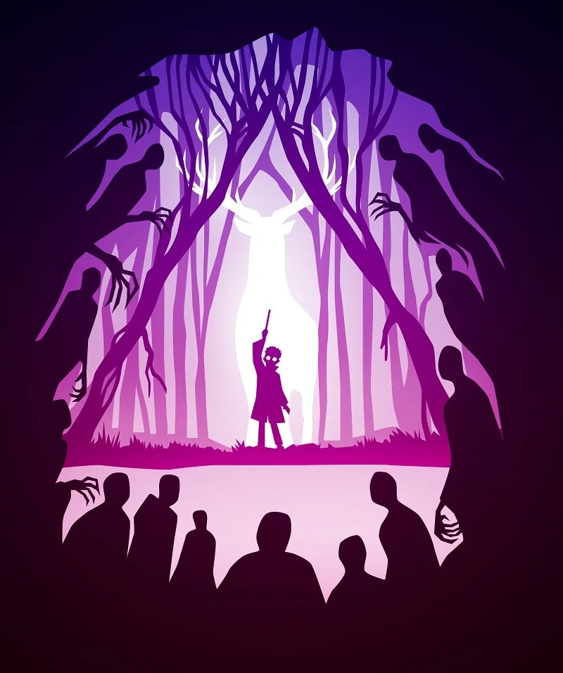
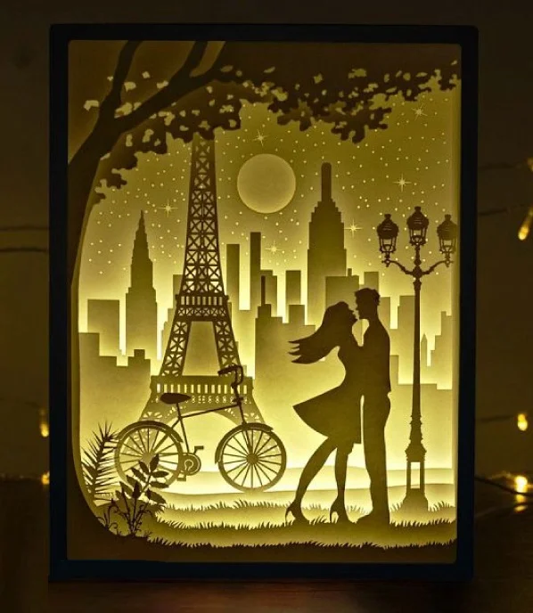
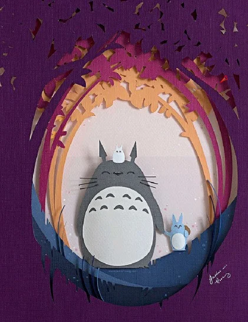
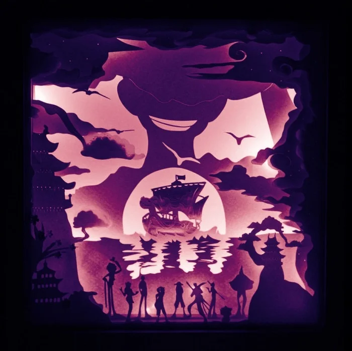

纸上的空间魔术
纸雕与剪纸最大的区别是"层"。剪纸通常只处理一张纸的正反面，而纸雕至少有两层以上——前景、中景、背景各自独立，中间用泡棉或卡纸隔开几毫米，在侧光或背光下便自然形成景深。
最迷人的是光的变化。同一座纸雕灯，白天看只是层次分明的白纸剪影；夜晚点亮内置灯泡，影子投射在墙面，暖光穿透镂空处，整件作品便瞬间有了呼吸感。
从民间的走马灯、皮影幕，到今天的灯箱、书雕、空间装置——纸雕始终是纸艺中最接近"造景"的一门。它邀请你走进去，而不只是站在外面看。
把数层白纸叠在一起，每层刻掉不同的部分。
灯光从背后透过来，前景清晰，背景朦胧——
纸雕就这样让二维纸张拥有了可以被凝视的深度。
纸雕与剪纸最大的区别是"层"。剪纸通常只处理一张纸的正反面，而纸雕至少有两层以上——前景、中景、背景各自独立，中间用泡棉或卡纸隔开几毫米，在侧光或背光下便自然形成景深。
最迷人的是光的变化。同一座纸雕灯，白天看只是层次分明的白纸剪影；夜晚点亮内置灯泡，影子投射在墙面，暖光穿透镂空处，整件作品便瞬间有了呼吸感。
从民间的走马灯、皮影幕，到今天的灯箱、书雕、空间装置——纸雕始终是纸艺中最接近"造景"的一门。它邀请你走进去，而不只是站在外面看。


把前景、中景与背景拆分到不同纸层上，通过层层错位获得景深，而不是只依赖单张图案的完整度。
纸雕常需要比普通剪裁更细致的边界处理，刀口清晰与否会直接影响层次边缘的干净程度和透光效果。
作品并不只在正面成立。背光、侧光或盒内光源都会改变轮廓关系，使纸雕拥有接近舞台布景的观感。
相比折纸的手持造型和剪纸的贴附属性，纸雕更容易进入桌面、橱窗、展墙等空间场景，形成完整的观看环境。

圆形开窗让观者的视线集中到龙猫与树洞中央，外圈枝叶则像舞台帷幕一样包住画面，是非常典型的角色场景型纸雕构图。
月亮、铁塔、路灯和恋人站位分别落在不同层上，背后的暖光把纸层厚度和空间远近一起显露出来，这是灯箱纸雕最有代表性的效果。

这张作品把海面、船只、人物群像和远景轮廓压进一个方形框景里，更接近可陈设、可展示的完整纸雕屏风或装饰盒形式。
今天的纸雕活在各种意想不到的地方：精品店的橱窗里立着巨大的纸雕城市，绘本的内页藏着可以拉开的立体纸剧场，婚礼现场用纸雕屏风代替背景板。手工的温度没有消失，只是换了一种方式继续在场。